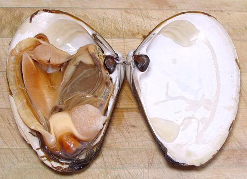
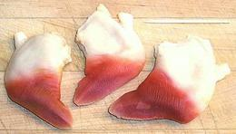

This very large clam (often over 6.5 inches) is found in the northwest Atlantic from the southern Gulf of St. Laurence, Canada, to the Gulf of Mexico. It is triangular in shape and lives in sand just to the sea side of the surf zone. In the U.S. the foot (called "tongue") is used to make clam strips and the strap meat around the edge of the shell and the adductor muscles that closes the shell are chopped and used for clam chowder and similar recipes. The foot is also exported to Japan for use as sushi. It is larger than the foot of their local surf clams.
More on Bivalve Mollusks.
 The edible parts of this clam are the strap meat, top and bottom at the edge of the shell, including the siphon (at the bottom tip), the two adductor muscles (opposite the muscle scars on the top shell at the right), and the foot (center left). The rest is the gill (center right) under which is a big bag of whatever the clam has sucked in recently, sort of like a full vacuum cleaner bag.

This is how the feet are sold, boxed in the frozen food cases of
Asian markets here in Los Angeles. How they get that pretty red
and white color scheme, I don't know. The live ones were beige and
barely reddish towards the tip.